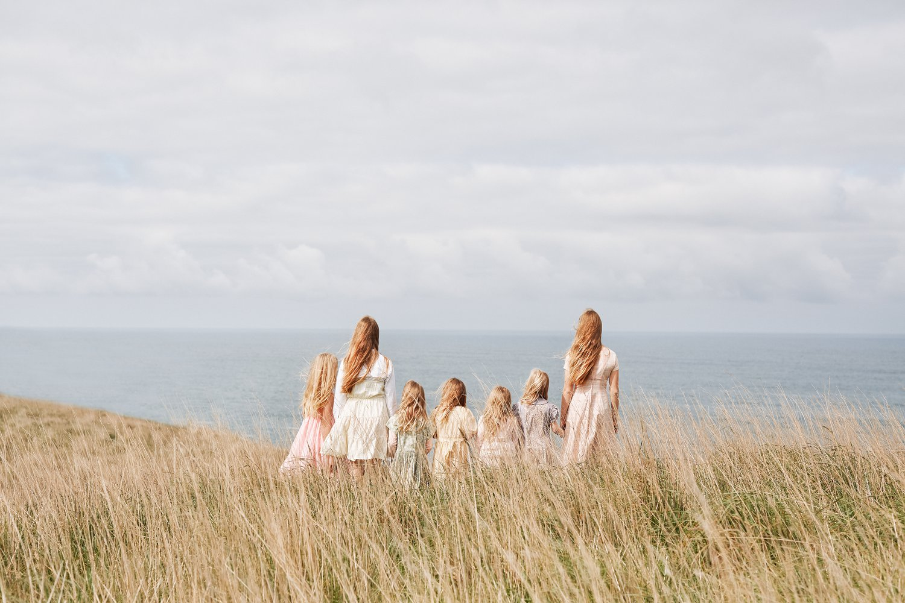

Stuart Miller, Alexandrena Parker, Mattia Panunzio
2022 Australian Photography Awards
Recent Work

Public Art Collections
- National Portrait Gallery, Canberra
- National Gallery of Victoria (NGV), Melbourne
- Gallery of Modern Art (GoMA), Brisbane
- State Library of NSW, Sydney
- National Library of Australia, Canberra
- Australian War Memorial, Canberra
GROUP EXHIBITIONS
- 2021 National Photographic Portrait Prize, National Portrait Gallery, Canberra
- 2020 Oceanie A Sea of Islands, National Museum van Wereldculturen, Netherlands
- 2019 Civilization: The Way We Live Now, National Gallery of Victoria, Melbourne
- 2019 Océanie, Musée du quai Branly Jacques Chirac, Paris
- 2019 The Courage for Peace, Australian War Memorial
- 2019 This Time It’s Personal, Sun Studios, Sydney
- 2018 Oceania, Royal Academy of Arts, London
- 2018 This Time It’s Personal, Sun Studios, Sydney
- 2018 National Photographic Portrait Prize, National Portrait Gallery, Canberra
- 2017 Gifted, Black Eye Gallery, Sydney
- 2017 Sugar Spin, Gallery of Modern Art (GoMA), Brisbane
- 2016 Precarious Nature, The Centre of Contemporary Art (CoCA), Christchurch New Zealand
- 2016 You are invited, Watters Gallery, Sydney
- 2015 The 8th Asia Pacific Triennial of Contemporary Art (APT 8), Queensland Art Gallery | GoMA, Brisbane
- 2015 New Acquisitions, National Gallery of Victoria, Melbourne
- 2012 One, Blak Dot Gallery, Melbourne
- 2010 National Photographic Portrait Prize, National Portrait Gallery, Canberra
SOLO SHOWS
- 2017 ‘GOLD’ Sun Studios, Sydney
- 2017 'GOLD' No Vacancy Gallery, Melbourne
- 2016 ‘GOLD’ Black Eye Gallery, Sydney
- 2016 Blood Generation (with Taloi Havini), Andrew Baker Art Dealer, Brisbane
- 2013 Blood Generation (with Taloi Havini), Black Eye Gallery, Sydney
- 2011 Blood Generation (with Taloi Havini), Blak Dot Gallery, Melbourne